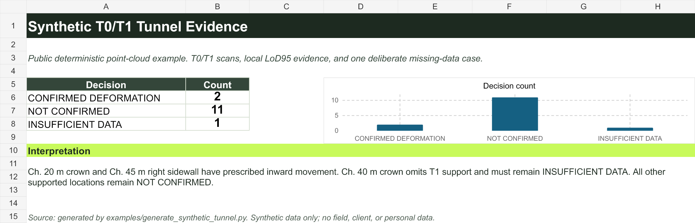

1. Load two scans
Choose an earlier scan and a later scan of the same tunnel.
Give this desktop tool an earlier and later 3D laser scan. It returns one clear result for each tunnel area: movement found, no movement confirmed, or rescan needed.
Choose an earlier scan and a later scan of the same tunnel.
The tool checks the roof and walls at measured positions along the tunnel.
See movement found, no movement confirmed, or rescan needed.
Code creates two small, artificial 3D tunnel scans. They contain no real field or client data.
One roof section moves 25 mm. One wall section moves 20 mm. Both should be found.
One roof section has no later-scan points. The result must say "rescan needed."

False alerts in controlled no-movement test
0 / 32 test cases were incorrectly called a changeThe tool can say "rescan needed." This avoids a confident alert when too many points are missing.
| Method | False alerts / 32 no-movement cases | How often it asked for more data |
|---|---|---|
| Fixed 10 mm rule | 4 | 43.8% |
| Local LoD95 rule | 0 | 43.8% |
| Local LoD95 plus coverage check | 0 | 84.4% |
| M3C2 comparison | 0 | 37.5% |
The public test uses 160 artificial cases. It shows how the decision rule handles movement and missing points. It does not prove accuracy on all real tunnels or all scanners. Raw scans, archives, credentials, and unpublished material stay out of this repository.